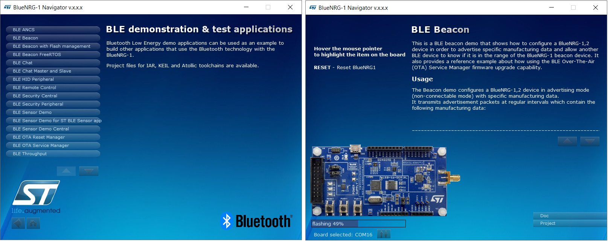
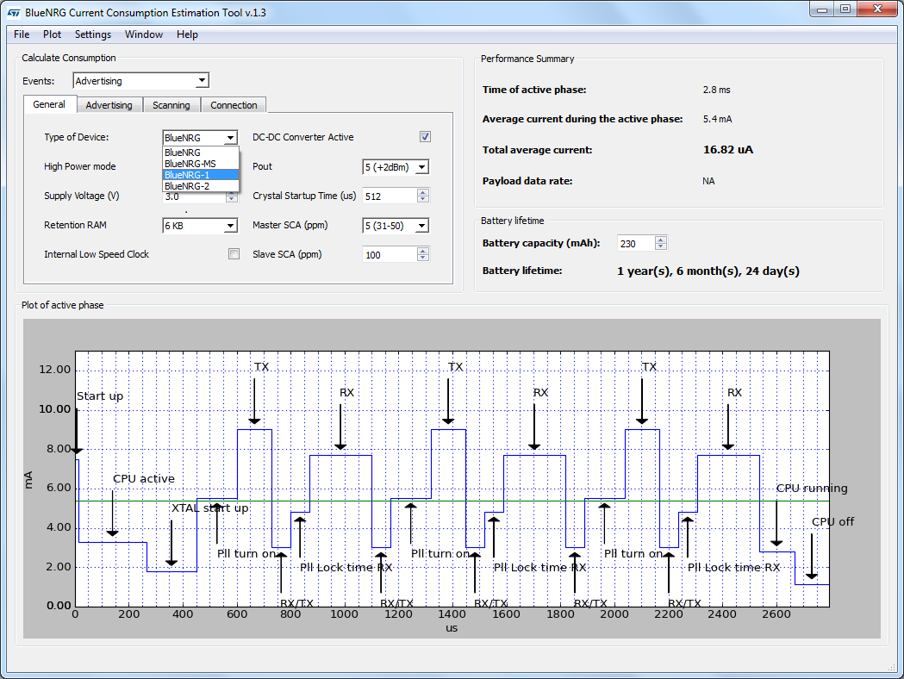

What is a BlueNRG-1 device?
- The BlueNRG-1 is a very low power Bluetooth Low Energy (BLE) single-mode, Cortex M0 system-on chip, compliant with Bluetooth Low Energy specification v4.2.
- It has 160 KB of Flash, 24 KB of RAM, a 32-bit core ARM cortex-M0 processor and several peripherals (ADC, GPIOs,I2C, SPI, Timers, UART, WDG and RTC).
- User can refer to the BlueNRG-1 datasheet for detailed information the device features, peripherals & BLE capabilities.
What is a BlueNRG-2 device?
- The BlueNRG-2 is a very low power Bluetooth Low Energy (BLE) single-mode, Cortex M0 system-on chip, compliant with Bluetooth Low Energy specification.
- It has 256 KB of Flash, 24 KB of RAM, a 32-bit core ARM cortex-M0 processor and several peripherals (ADC, GPIOs,I2C, SPI, Timers, UART, WDG and RTC).
- It also provides the BLE data length extension feature.
- User can refer to the BlueNRG-2 datasheet for detailed information the device features, peripherals & BLE capabilities.
What is Bluetooth Low Energy (BLE) technology?
- For people new to the Bluetooth Low Energy technology, some fundamentals are available on BlueNRG-1,2 BLE stack programming guidelines (PM0257) , Bluetooth low energy technology section.
- In particular, user can get a clear understanding about the BLE features, layers (GAP, GATT, ATT, SM, L2CAP,HCI, Link & PHY) , devices roles (Master, Slave, Client, Server, Central, Peripheral) key information types (services & characteristics) and how to use them (read, write, notify, indicate).
Basic evaluation steps for dummies (no specific BLE know how is required)
Get the BlueNRG-1,2 Development Kit(DK) HW/SW resources for evaluating BlueNRG-1,2 BLE capabilities:
-
Order and buy an BlueNRG-1, STEVAL-IDB007V2 development kit, or a BlueNRG-2, STEVAL-IDB008V1, BlueNRG-2, STEVAL-IDB008V2, BlueNRG-248, STEVAL-IDB009V1 development kit.
-
NOTEs:
-
BlueNRG-1, STEVAL-IDB007V1M evaluation platform based on the SPBTLE-1S module with 32MHz HS crystal is also available.
-
Download the BlueNRG-1_2 Development Kit (DK) SW package STSW-BLUENRG1-DK web page, Get Software button (User is requested to perform a light registration by providing email account).
-
Unzip the downloaded SW package and launch the related installer BlueNRG-1_2 DK-x.x.x.x-Setup.exe.
First basic step: Interact with Smarthpones world by running the preprogrammed BLE Sensor Demo application
-
Power on the BlueNRG-1, STEVAL-IDB007V2 development kit, or a BlueNRG-2, STEVAL-IDB008V1, BlueNRG-2, STEVAL-IDB008V2, BlueNRG-248, STEVAL-IDB009V1 development kit by connecting to a PC USB port through an mini USB Cable or two batteries on battery holder (setting the JP2 jumpers accordingly).
-
On selected smarthphone, install the BlueNRG Sensor Demo app available on Google Play Store (Android) or Apple web site respectively:
-
Run the BlueNRG Sensor Demo and look for the BlueNRG-1, STEVAL-IDB007V2 development kit, or a BlueNRG-2, STEVAL-IDB008V1, BlueNRG-2, STEVAL-IDB008V2, BlueNRG-248, STEVAL-IDB009V1 Sensor Demo application in discovery mode: BlueNRG device is detected on smarthphone display.
-
Tap on BlueNRG: BlueNRG-1, STEVAL-IDB007V2 development kit, or a BlueNRG-2, STEVAL-IDB008V1, BlueNRG-2, STEVAL-IDB008V2, BlueNRG-248, STEVAL-IDB009V1 Sensor Demo application connects to the smarthphone and user can get graphical evidence of platform accelerometer (cube rotation) and environmental sensors (temperature and pressure).
Second basic step: use BlueNRG-1,2 Navigator
- BlueNRG-1,2 Navigator are user friendly GUI which lets you directly download and run the selected prebuilt application binary image (BLE examples or peripheral driver example) on the BlueNRG-1,2 platforms without a SWD interface (it just requires a BlueNRG-1, STEVAL-IDB007V2 development kit, or a BlueNRG-2, STEVAL-IDB008V1, BlueNRG-2, STEVAL-IDB008V2, BlueNRG-248, STEVAL-IDB009V1 connected to a PC USB port)
- They also provides demo applications description (html files) and access to board configurations and demo application source code if needed.
- BlueNRG-1,2 Navigator are available on BlueNRG-1_2 DK SW package on Start menu folder, ST BlueNRG-1_2 DK X.X.X, BlueNRG-1 Navigator or BlueNRG-2 Navigator.
- User is just requested to connect one or two BlueNRG-1, STEVAL-IDB007V2 development kit, or a BlueNRG-2, STEVAL-IDB008V1, BlueNRG-2, STEVAL-IDB008V2, BlueNRG-248, STEVAL-IDB009V1 board on PC USB ports and then select the specific demonstration application to be tested.
|

|
| Figure 1: BlueNRG-1 Navigator: BLE demo applications and BLE Beacon download |
- Refer to the BlueNRG-1,2 development kit User Manual (UM2071), BlueNRG-1,2 Navigator section for more detailed information.
- This documents also describes the BlueNRG-1, STEVAL-IDB007V2 development kit, or a BlueNRG-2, STEVAL-IDB008V1, BlueNRG-2, STEVAL-IDB008V2, BlueNRG-248, STEVAL-IDB009V1 platform resources and all the available BlueNRG-1_2 DK SW package demonstration applications.
Third basic step: evaluate the BlueNRG power consumption on a BLE application scenario
- BlueNRG power consumption PC application provides an accurate estimation of BlueNRG-1,2 power consumption and related battery life under various operating conditions (advertising, scanning, and connection).
- Download and install the BlueNRG current consumption estimation tool available on STSW-BNRG001 web page.
- Select the BlueNRG-1,2 device, the related general parameters and the BLE application scenarios and related parameters (advertising/scanning/connection interval, ...) and get the estimated power consumption and battery life.
|

|
| Figure 2: BlueNRG Power Consumption tool: Connection - Slave scenario power estimation example for BlueNRG-1,2 |
BlueNRG-1,2 Low Power Modes
- Three low power modes are provided to achieve the best compromise between low power consumption, short startup time and available wakeup sources:
-
CPU-Halt mode (only the CPU is stopped. All device peripherals continue to operate and they can wake up the CPU when an interrupt/event occurs).
-
Sleep mode (CPU is stopped and all the peripherals are disabled. Only the low speed oscillator block and the external wakeup source block are running).
-
Standby mode (CPU is stopped and all the peripherals are disabled. The only wakeup source are IO9, IO10, IO11, IO12 and IO13).
 1.8.10
1.8.10